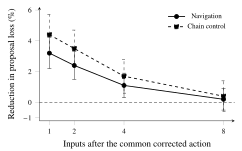

Recurrent control
Retaining state corrections in recurrent control
A local optimizer can improve a recurrent controller's action while leaving its memory unchanged. We test whether retaining the corrected state improves subsequent decisions, beyond the benefit of caching the same corrected plan.
A frozen controller proposes a persistent state \(z_t^0\), then decodes a short control sequence \(U_t^0\). Action refinement searches directly over the control sequence. State correction searches over the state that produces it, using the same task residuals, dynamics and physical limits.
The local update uses a fresh damped Gauss–Newton matrix. Candidates must reduce the evaluated objective and stay within cumulative state and action-change bounds. The reference configuration permits three candidate trials per input.
Both retain and discard branches execute the corrected first action. Retain stores the corrected state; discard stores the original proposal. Both receive the executed action as an input at the next step.
With subsequent correction disabled and identical observations replayed to both branches, retention lowers next-proposal loss by 3.2% in navigation and 4.4% in chain control. The effect declines over the next few inputs and is close to zero by eight.
A separate experiment independently varies state retention and plan caching after the same common solve. All four branches then resume the same action-space solver.

| What is retained | Navigation | Chain control |
|---|---|---|
| Neither correction nor plan | 0 (reference) | 0 (reference) |
| Plan only | 1.1 ± 0.7 | 1.7 ± 1.1 |
| State only | 0.8 ± 0.7 | 1.4 ± 1.0 |
| State and plan | 1.8 ± 0.8 | 2.8 ± 1.2 |
Conditioning on both branches having the same cached plan, state retention adds a 0.7% [0.2, 1.2] navigation cost reduction and 1.1% [0.3, 1.9] in chain control. These conditional ratios are computed against the plan-only branch, rather than by subtracting table entries.
Retaining rather than discarding corrections raises navigation success from 82.7% to 85.4%, a paired gain of 2.7 percentage points [1.7, 3.7]. Action refinement is a stronger baseline than discarded state correction. Fitting its solution back into memory recovers most of the retention benefit.
| Controller | Success (%) | Contacts / 1,000 steps | Mean time (ms) |
|---|---|---|---|
| Frozen recurrent policy | 68.4 ± 1.9 | 37.1 ± 2.3 | 2.10 |
| CBF filter | 79.2 ± 1.6 | 6.4 ± 0.8 | 2.58 |
| Predictive filter | 82.1 ± 1.5 | 4.1 ± 0.6 | 3.92 |
| Action refinement | 83.9 ± 1.4 | 15.9 ± 1.1 | 3.82 |
| Action + state fitting | 85.2 ± 1.3 | 14.4 ± 1.1 | 3.91 |
| State correction, discard | 82.7 ± 1.5 | 18.2 ± 1.2 | 3.81 |
| State correction, retain | 85.4 ± 1.3 | 14.2 ± 1.0 | 3.79 |
| Warm-started MPC | 85.8 ± 1.3 | 6.0 ± 0.7 | 3.93 |
MPC achieves similar navigation success with substantially fewer contacts. The chain task shows the same retention effect: success increases from 74.2% to 78.6%, while MPC reaches 79.4% with the lowest contact rate. At larger latency budgets, direct planning benefits more from additional solve time.
Replacing the target or delaying the relevant sensor records removes the average benefit of a retained correction. The rollback variant saves the proposal for one additional input and checks the target identifier and record age before the next recurrence:
The switch is zero when the active target changes or the relevant record is more than one input old. In full episodes with intermittent sensing delays, rollback raises navigation success from 82.1% to 83.4% and chain success from 71.8% to 73.0% compared with unconditional retention.
The experiments use one recurrent architecture in two simulators with differentiable geometry. A local loss decrease is a statement about the supplied objective. Under stale sensing, that objective can improve while physical control deteriorates. Rollback removes only the latest correction, leaving older changes already propagated through memory.